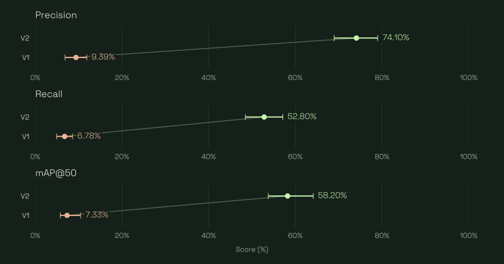
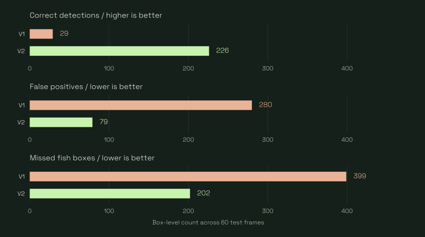
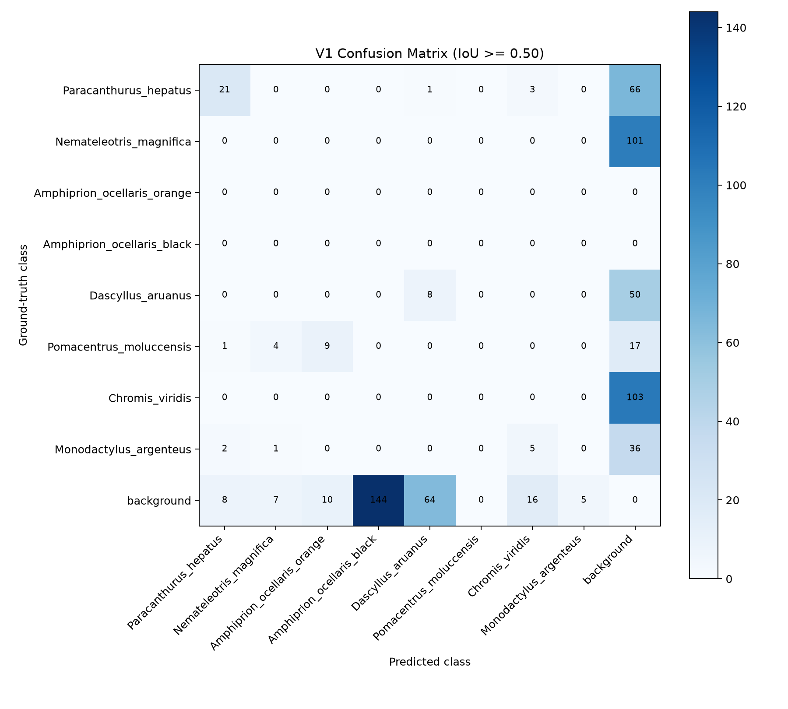
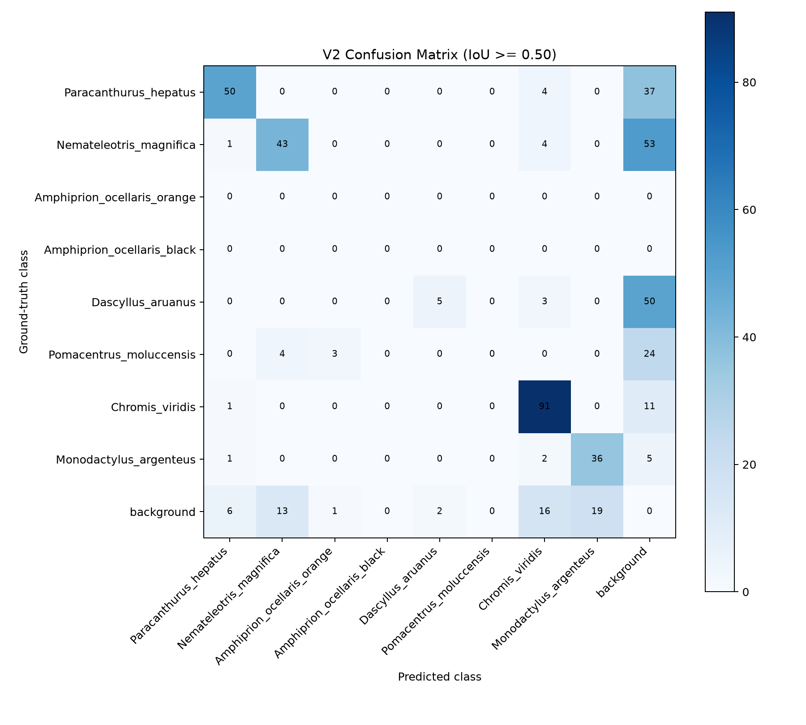
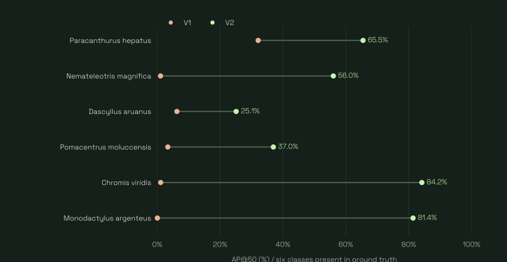
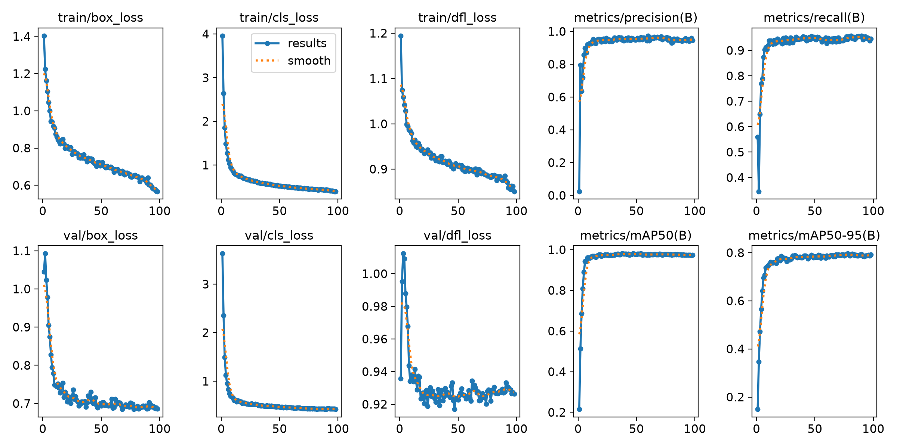
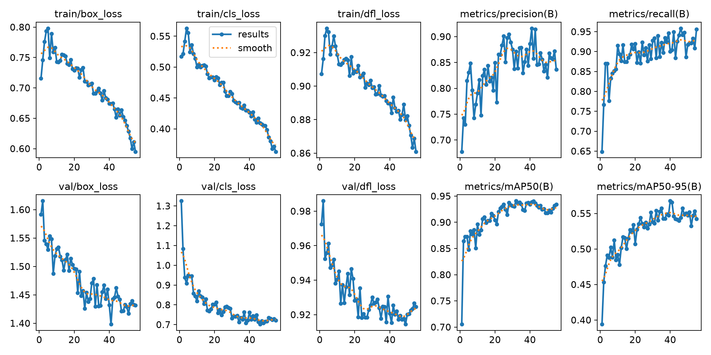

Fish AI / From data to detection
Look.
Look again.
The difficult part wasn’t just training a model.
It was understanding what went wrong.


Drag or use the arrow keys. A qualitative comparison, separate from the frozen evaluation below.
01 / Learn the workflow
Annotation
before automation.
Summer 2026 / NYCU Adaptive Photonics Laboratory,
Tainan. Day-to-day guidance mainly from a senior lab member.
Fish images & class mapping
1,292 → 1,104 valid images
10 classes / 80–20 split
Test the real aquarium scene
02 / Full-tank adaptation
New scene.
New problems.
Pipes, reflections, and equipment became false positives.
The data had to reflect the deployment environment.


How I adapted the model
I added 60 manually labeled full-tank images: 48 for adaptation training and 12 for validation. Fish were labeled; background equipment remained unlabeled as hard-negative context. These were not empty, fish-free images. The independent 8-class aquarium data is separate from the 10-class lab workflow.
03 / Final independent test
The same frames.
Two models.
A later recording. Frozen labels.
A clearer view of what improved—and what still gets missed.

280 false positives became 79.
The paired 95% interval for this reduction is 64.94–77.97%.
Fewer false alarms.
Still fish to find.
V2 found 226 of the 428 annotated fish boxes. The 202 misses make recall a clear next step.

Where did the model
get confused?
Rows are the true classes; columns are predictions. The diagonal shows correct class assignments. The rightmost background column contains unmatched fish; the bottom background row contains unmatched predictions.


Read the counts rather than color intensity: the two figures use different color scales. The matrix pairs boxes by overlap before comparing classes; headline metrics match within each class. That difference gives V2 a diagonal total of 225 versus 226 headline true positives. Background cells alone therefore are not the headline false-positive or missed-fish totals. Evaluation code ↗
Which fish were harder?

Performance varies by class. AP uses confidence-ranked predictions; a class can have nonzero AP even when it has no true positives at the separate 0.35 detection threshold.
Exact values & uncertainty
| Metric | V1 / Controlled | V2 / Adapted |
|---|---|---|
| Precision | 9.39%95% CI 6.85–11.88% | 74.10%95% CI 68.96–79.00% |
| Recall | 6.78%95% CI 4.94–8.60% | 52.80%95% CI 48.47–57.11% |
| F1 | 7.87%95% CI 5.76–9.93% | 61.66%95% CI 57.51–65.60% |
| mAP@50 | 7.33%95% CI 5.76–10.45% | 58.20%95% CI 53.75–64.13% |
| mAP@50:95 | 4.30%95% CI 3.28–6.33% | 30.34%95% CI 28.44–33.58% |
Intervals resample whole frames from this one recording. They do not estimate variation between aquariums, camera systems, or reef sites.
Evaluation protocol and scope
Both models used the same frozen images and labels, image size 960, confidence 0.35, and class-aware one-to-one matching at IoU 0.50. The separate AP calculation used a confidence floor of 0.001 and the project's verified 101-point evaluator. mAP averages cover the six classes with positive ground truth; the two absent classes have no estimated AP, but their detections still count as false positives. These 60 validation frames are separate from the 60 adaptation images used in training and validation.
On this same final test, v1 precision was 9.39%, recall 6.78%, and mAP@50 7.33%. False positives fell from 280 to 79 with v2, a 71.79% reduction. This is a within-test comparison, not a comparison against the older 30-frame results.
Training curves / development validation
Original run graphs from the project repository. These show training and development-validation diagnostics; their scores are separate from the final independent test above.


These results measure later footage from the same aquarium installation. They do not establish performance on the open-ocean cameras below.
04 / Watch the archive
Inside
the tank.
Original demonstration / 71 seconds / Silent
Historical labels & archived evaluation
“AP50” in the archive means mAP@50; the historical numerical result belongs to the earlier 30-frame test. “Batfish” / “Platax_sp” is the original model label for silver moony (Monodactylus argenteus). The original pixels and labels remain unchanged.
The silent video shows the raw scene (0:00–0:15), v1 detections (0:15–0:30), matched v1/v2 views (0:30–0:51), the superseded 30-frame results (0:51–1:03), and next steps (1:03–1:11).

05 / In development
Seeing is
only the beginning.
Exploratory ByteTrack and long-duration live tests.
An engineering project, rather than a publication.

06 / Dataset labeling · NYCU / NMMBA project
A window
underwater.
I help label fish images for an NYCU–NMMBA project developing live fish identification. These public seabed cameras show the environment behind that work.
Fish-image labeling and dataset expansion.
Underwater cameras and live-identification development.
The public camera broadcast, without an AI overlay from this portfolio.
頂流區
Nanwan, Pingtung / Nuclear Plant No. 3 seawater intake
Taiwan / Public seabed observation
Look below
the surface.
Loading connects to YouTube, which receives connection and device information. Google Privacy Policy ↗
Player not loaded. Choose Load YouTube camera to connect.
Camera footage and stream credit: 台電-南灣海域珊瑚觀測計畫. Availability depends on the source channel.
Continuous AI identification needs dedicated computing hardware. This page embeds the public video; the aquarium-test graphs above are a separate evaluation.
Under the hood